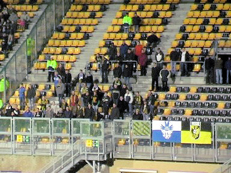
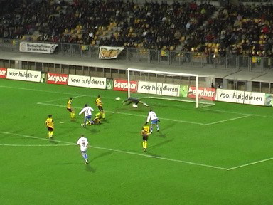
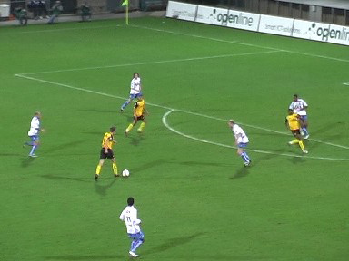
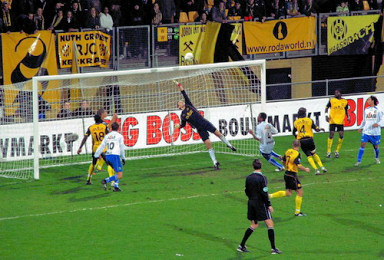

|
Roda JC - Vitesse (3-2) 1 december 2007
|
Een door WSU georganiseerde sfeeractie op zuid ter nagedachtenis
aan wijlen dhr. Theo Pickée.
Onder de rook van enkele fakkels en honderden sterretjes zeilde
het Aevitae-doek over de oost-tribune.

Alweer minder supporters uit Arnhem dan het jaar ervoor. De
toss is gewonnen door Vitesse. De club maakt de klassieke fout
om tegen Roda van speelrichting te veranderen.

In de beginfase moet Castro al enkele malen reddend optreden.
Terwijl Lamah binnen de zestien zit te pielen wordt Oper flink
vastgehouden. Braamhaar ziet dat niet.
Even later wordt Saeijs rand zestien gevloerd.
Vlak voor rust een bal op de paal. Roda met de schrik vrij.
foto:
sv-online
Vlak daarna schiet Lamah met een prachtig diagonaal schot Roda
naar een 1-0 voorsprong, (45').
De tweede helft is amper begonnen als Lamah opnieuw scoort: 2-0,
(46').
foto: sv-online

Saeijs ziet een gaatje en gaat schieten.

Het dwarrelschot is onbereikbaar voor Velthuizen: 3-0, (69').

Een prima kopbal van Sansoni: 3-1, (77').
foto:
sv-online
Invaller Gommans glijdt de bal richting het doel.
De bal stuitert heel vreemd en krijgt daardoor een versnelling die
Castro verrast: 3-2, (83').
Gezellige drukte in de Kickoff.
Van de spelers kwamen Senden, Vandamme, Hadouir, Matondo
en Bodor.
Uitsluitend vrolijke gezichten nu Roda (voor één dag) op de vierde
plaats staat.
© Koempels Pleasure Dome
|